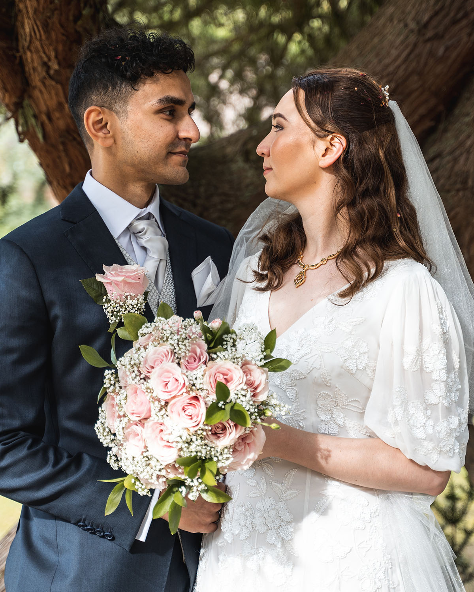
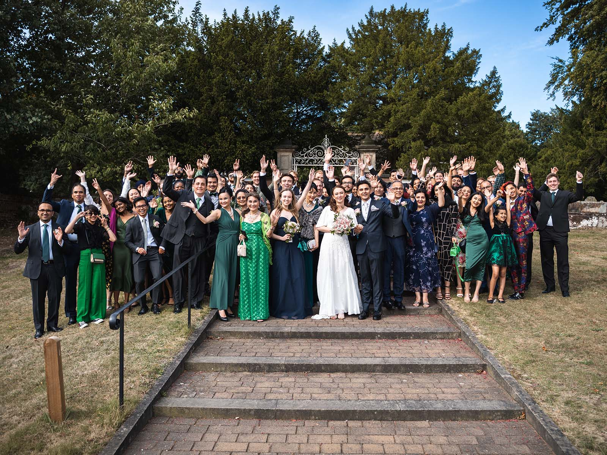
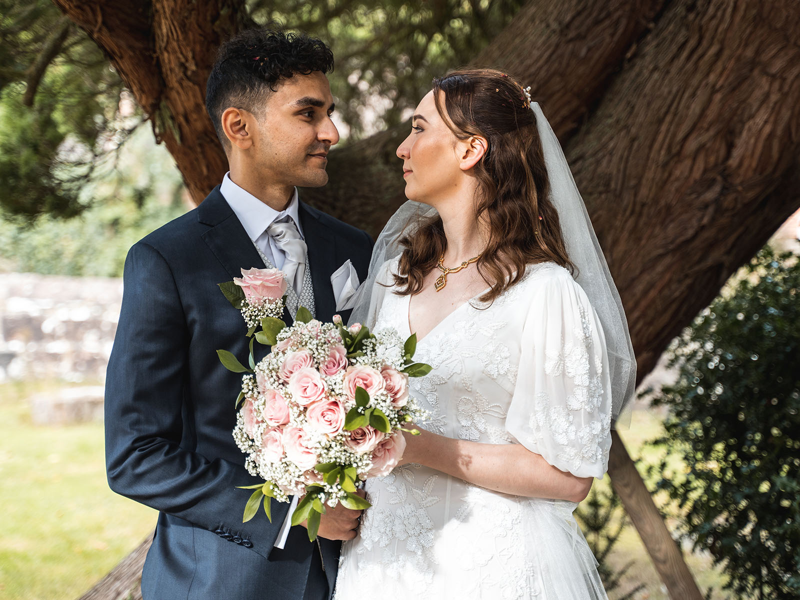
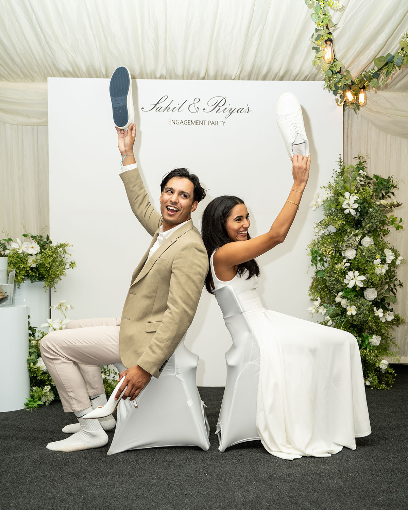
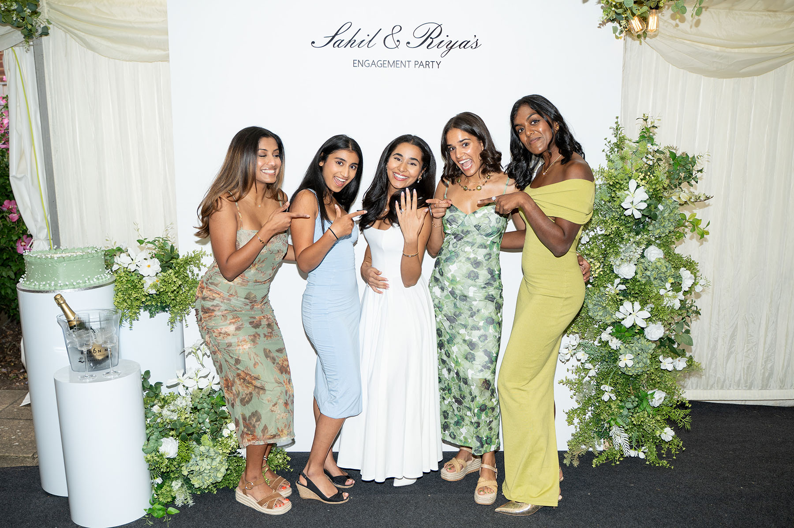
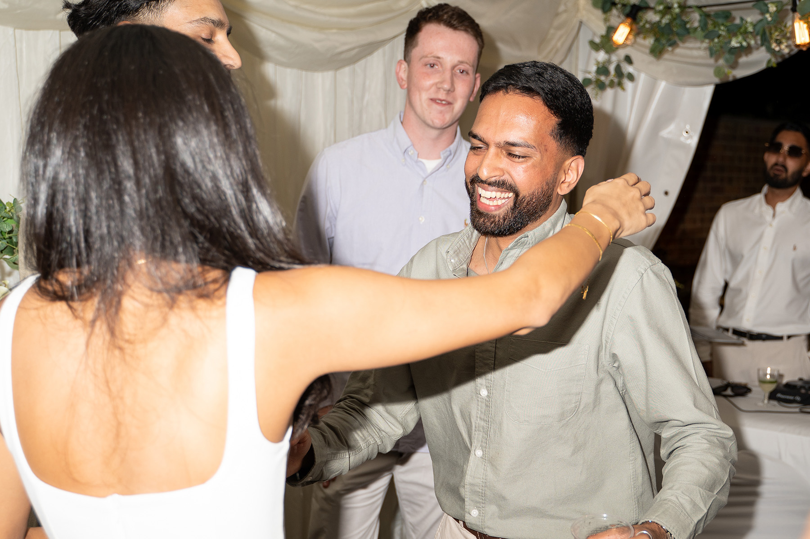
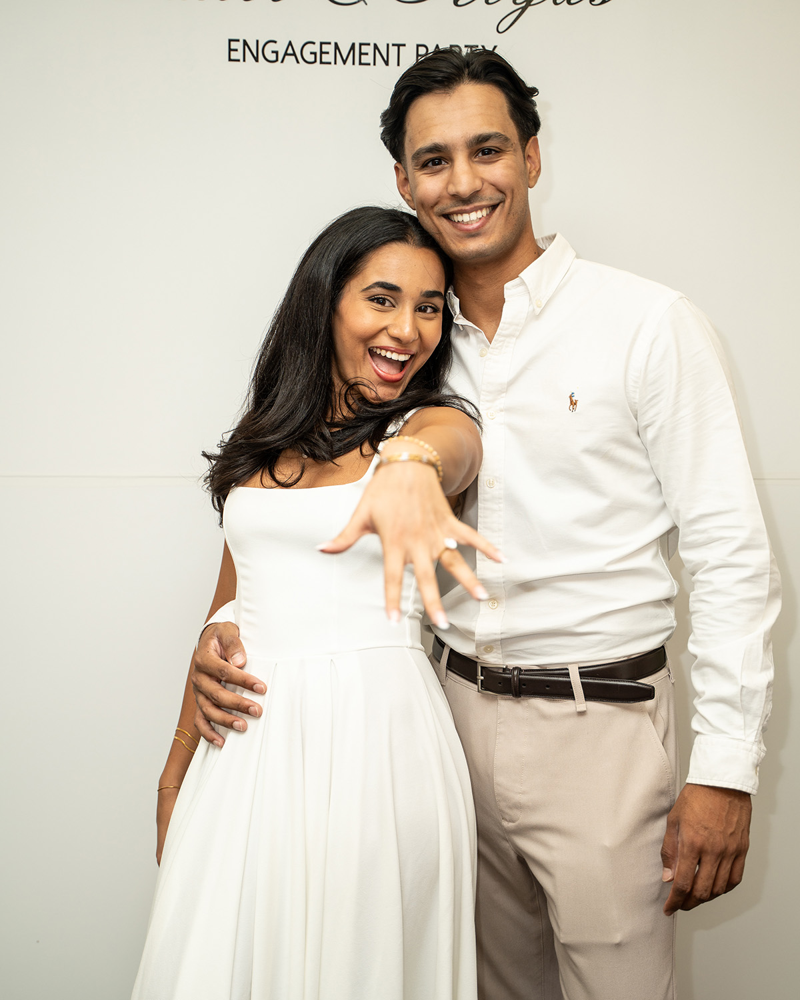
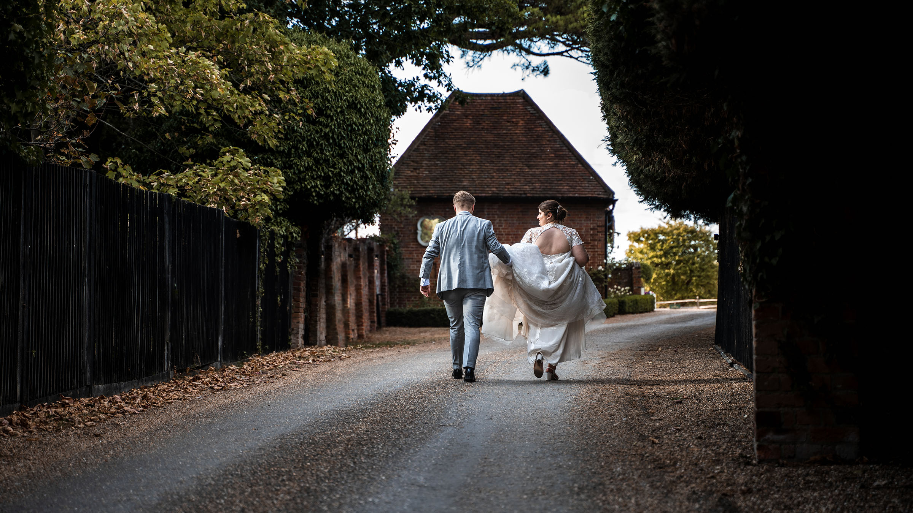

I cover a limited number of weddings, engagements and private celebrations each year, bringing the same calm, documentary approach I use across events.
The focus is on real moments, atmosphere and the people involved, with lightly directed portraits and detail shots where they add to the day.
Enquire about availability







Short films can be added alongside photography to capture the atmosphere, speeches and moments that photos alone cannot.
Megan & James, London
Camilla & Frankie
A flexible approach built around the day, whether that's a short engagement shoot, a registry office ceremony or full-day coverage with a short film.
Photography
Natural, documentary-style coverage
Considered, lightly directed portraits
Detail shots (rings, flowers, table settings)
Video
Speeches and ceremony coverage
Engagement films
Highlight reel edits
Delivery
Online gallery for sharing and downloads
Edited photo selects within 5 working days
Full edited gallery within 3 weeks
Planning a wedding or engagement?
If you're looking for relaxed, natural coverage with a documentary feel, get in touch and tell me a bit about the day.